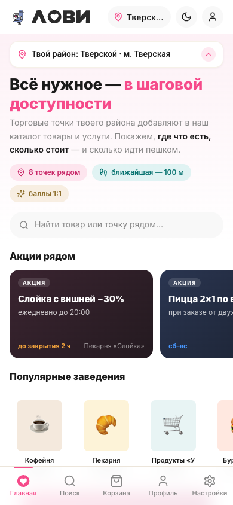

SZ-062 · пакет приёмки · Гейт №1
Оптимизация CSS и сборка дизайн-системы LOVII
Свежие клоны, инвентаризация и аудит витрины lovii-demo перед стейджингом. Ниже — измеренное состояние, найденные проблемы и список решений, которые нужно утвердить, прежде чем начинать правки.
00Что сделано за сессию
Выполнены фазы 0–2 задания — только измерения, без правок кода. Правки (фаза 3) по заданию начинаются лишь после вашего ответа на этом гейте.
- Фаза 0 — свежие клоны и инвентаризация4 репозитория, головы зафиксированы; словарь классов, реестр иконок, карта роутов.
- Фаза 1 — аудит CSSмёртвые классы, дубли/коллизии, статика (syntax/eslint/HTML), хардкод-инвентарь, специфичность.
- Фаза 2 — аудит иконокреестр, использования, размеры, неиспользуемые, дубли SVG.
- Базовый рантайм-прогонлокальный стенд + headless-обход всех роутов (390/1280 × светлая/тёмная).
01Числа в двух словах
Базовое состояние чистое по рантайму: 0 ошибок консоли, 0 горизонтальных переполнений, 0 видимых SVG нулевого размера. Баг «стрелок профиля» в текущей сборке закрыт.
02Аудит CSS — что найдено
Мёртвые классы
Класс определён в CSS, но отсутствует и в строках HTML/JS, и в рантайме (обход 29 роутов). Динамически конструируемые вынесены отдельно и к удалению не предлагаются.
| Группа | Классы |
|---|---|
| Бейджи/теги | app-badge_gold, count-badge, cabinets__tag_todo, cabinets__tag_work |
| Каналы входа | auth-channel-ico_max, auth-channel-ico_telegram, auth-channel-ico_vkontakte |
| Кошелёк/подписка | wallet__period, pass__cta, pass__error, pay-skin-note |
| Профиль/ранги | tier-levels, prof-chips, prof-head, roles-hbars, roles-hbars__label/__row/__track/__val |
| Витрина/точки | home-popular__types, stores__types, msp-times, flow-steps, install-card-btn |
| Утилиты/прочее | shadow-soft, shadow-lift, theme-ico-moon, theme-ico-sun, tone-ink, tone-sand, filters-indicator, set-group-gap, crumb, pv, quick, quick-row, tl, warn |
priv__card_gold/pink/tiffany, skin-nominal, tier__level_cur/__done собираются динамически (prefix_${var}) и присутствуют в рантайме. Ещё 384 класса не видны в базовом обходе, но есть в коде — это глубокие состояния (корзина с товарами, карточка заказа, чат, под-табы МСП), они живые.
Дубли и каскад
| Тип | Кол-во | Пример |
|---|---|---|
| Селектор определён >1 раза | 103 | .app (строки 30 / 640), .app-header-in (37 / 3784), .hero (68 / 664) |
@media (min-width:640px) | 9× | разбросан по файлу |
| Фатальные JS-коллизии | 0 | — |
Перекрытия function | 10 | cabinets.js ↔ dash.js (renderRepDash, renderMspCabinet…) |
Причина повторов — «блоки-патчи» в конце файла, переопределяющие каркас. Сводятся в фазе 3.
Хардкод и статика
Хардкод
- 52 уникальных hex вне токен-слоя
- топ:
#fff25×,#f64a8a11×,#c92a6a9× - повторы размеров: 16px 386×, 12px 338×, 14px 203×
Статика
node --check: 0 ошибок- eslint: 0 ошибок, 59 предупреждений
- HTML: 0 дублей id, 0 несбалансированных тегов
03Аудит иконок
Главная проблема — нет шкалы размеров. В CSS есть только базовый .icon {16×16} и правило .icon-btn svg {18×18}. Явных классов размера нет вообще, поэтому 195 из 212 вызовов рисуются размером «по родителю» — именно это порождает баг-класс «стрелок профиля».
Неиспользуемые (13): bar-chart, line-chart, trending-down, settings, arrow-up-right, pie, moon, arrow-down-left, gift, ticket, nfc, bell, coins. Часть из них — под вопросом (графики/темы), нужен ручной разбор.
Предложение: ввести явную шкалу 16 / 20 / 24 / 32 классами icon-16…icon-32, базовый .icon оставить 16, проставить размер каждому вызову.
04Сверка demo ↔ app (без изменений)
| Проверка | Результат |
|---|---|
| Токены | 103 demo / 106 app; 3 лишних app-токена: --lv-navbar-height, --lv-navbar-offset, --lv-line-strong. «Различия значений» — только запись (0.85 vs .85), значения идентичны |
| Navbar | --lv-navbar-height не определён в demo → offset от fallback 56px при реальном таббаре 64px (фикс — 1 строка, ждёт Гейта №2) |
| Кабинеты | 13 разночтений значений по общим семействам (совпадает со спекой) |
05Что нужно утвердить (Гейт №1)
Правки CSS и иконок не начинаются, пока вы не подтвердите эти пункты. Можно ответить по каждому коротко.
Решение владельца
- 1. Удаление мёртвого CSS — 38 классов (§02). Убрать все? Или исключить спорные (
shadow-*,theme-ico-*,tone-*)? - 2. Слияние дублей — свести 103 повторных селектора и 9 дублей
@media 640pxк одному определению, порядок слоёвtokens → base → primitives → components → utilities. Ок? - 3. Токенизация хардкода — заменить 52 hex и частотные размеры на
var(--lv-*). Где значений нет в каноне — предложу новые токены на Гейт №2. - 4. Удаление неиспользуемых иконок — 13 штук (§03), с ручным разбором спорных.
- 5. Шкала размеров иконок — принять
16/20/24/32и проставить явный размер всем 195 вызовам? - 6. Navbar-фикс — определить
--lv-navbar-height: 64px(уходит на Гейт №2 вместе с новыми токенами).
06Дальше по плану
- Фаза 3 — оптимизацияудаление/слияние/токенизация, слои, navbar-фикс, размеры иконок; каждая правка — строкой таблицы.
- Гейт №2 — токены и таблица правоксогласование новых токенов и визуальных отличий.
- Фаза 4 — сборка дизайн-системыпакет
design/ds/: токены, примитивы, каталог компонентов, реестр иконок,catalog.html. - Фаза 5 — валидациянулевые гейты + скриншот-регрессия «до/после» по всем роутам, локальный стенд.
- Гейт №3 и фаза 6приёмка, артефакты в
lovii_docs, команда на пуш.
07Приложение — базовое состояние стенда
Скриншоты «до» сняты на локальном стенде (http://127.0.0.1:8090), сборка a8a86be. Это опорные кадры для последующей регрессии «до/после».
Главная · 390 · светлая

Кабинет МСП · 1280 · светлая